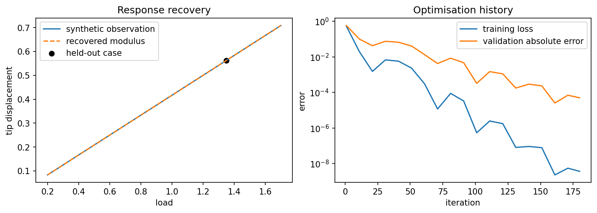

6.6.1. Differentiate and recover a modulus in the bar toy¶
Learning objective. Derive the exact tip-displacement sensitivity of the course-owned elastic-bar exercise, then audit its positive modulus parameterisation and held-out recovery evidence.
Predict first. For a fixed positive load, predict the sign of \(\mathrm{d}u_{\mathrm{tip}}/\mathrm{d}E\). Also predict whether the notebook’s \(\exp(\mathrm{log\_E})\) parameterisation imposes an upper bound on the modulus.
Recorded computation: 5.446 seconds on the reference local CPU after setup. This is not a fresh Colab timing.
Read the code and its recorded outputs in order. To change inputs and run Python, download a notebook and use the course environment. The static book does not execute these cells in the browser.
Download practice notebook · Download with worked solutions · Environment setup
This notebook is an original one-dimensional elastic-bar tensor exercise. It is not a PhAST fracture inverse, does not use research data, and should not be used to infer the differentiability of a history-dependent damage calculation. It makes the chain explicit: trainable modulus → stiffness tensor → linear solve → observed displacement → scalar loss.
{'course_layout': 'teaching/ukacm_autumn_school_2026 located', 'torch': '2.8.0', 'device': 'cpu', 'dtype': 'torch.float64'}
torch.manual_seed(20260909)
n_elements, length, area = 40, 1.0, 1.0
h = length / n_elements
# Unit-modulus stiffness. E remains a differentiable scalar multiplier.
K0 = torch.zeros((n_elements + 1, n_elements + 1), dtype=torch.float64)
local = torch.tensor([[1.0, -1.0], [-1.0, 1.0]], dtype=torch.float64) * area / h
for e in range(n_elements):
K0[e:e+2, e:e+2] += local
def tip_displacement(E, load):
K_free = (E * K0)[1:, 1:]
force = torch.zeros(n_elements, dtype=torch.float64)
force[-1] = load
return torch.linalg.solve(K_free, force)[-1]
E_probe = torch.tensor(1.8, dtype=torch.float64, requires_grad=True)
u_probe = tip_displacement(E_probe, 1.1)
(du_dE_ad,) = torch.autograd.grad(u_probe, E_probe)
h_fd = 1.0e-6
du_dE_fd = (tip_displacement(E_probe.detach() + h_fd, 1.1) - tip_displacement(E_probe.detach() - h_fd, 1.1)) / (2*h_fd)
du_dE_exact = -u_probe.detach() / E_probe.detach()
print({"u_tip": float(u_probe.detach()), "AD": float(du_dE_ad), "FD": float(du_dE_fd), "analytic": float(du_dE_exact)})
assert abs(float(du_dE_ad - du_dE_exact)) < 1.0e-12
assert abs(float(du_dE_fd - du_dE_exact)) < 1.0e-8
{'u_tip': 0.6111111111111187, 'AD': -0.33950617283949214, 'FD': -0.3395061727862192, 'analytic': -0.3395061728395104}
# Whole load cases are kept separate: train, validation, and held-out.
E_true = torch.tensor(2.4, dtype=torch.float64)
train_loads = torch.tensor([0.35, 0.75, 1.15, 1.55], dtype=torch.float64)
validation_load = torch.tensor(0.95, dtype=torch.float64)
heldout_load = torch.tensor(1.35, dtype=torch.float64)
observed_train = torch.stack([tip_displacement(E_true, load) for load in train_loads]).detach()
observed_validation = tip_displacement(E_true, validation_load).detach()
observed_heldout = tip_displacement(E_true, heldout_load).detach()
log_E = torch.nn.Parameter(torch.log(torch.tensor(0.9, dtype=torch.float64)))
optimiser = torch.optim.Adam([log_E], lr=0.08)
history = []
for iteration in range(180):
optimiser.zero_grad(set_to_none=True)
E_trial = torch.exp(log_E)
predicted = torch.stack([tip_displacement(E_trial, load) for load in train_loads])
loss = torch.mean((predicted - observed_train) ** 2)
loss.backward()
optimiser.step()
if iteration % 10 == 0 or iteration == 179:
with torch.no_grad():
val_error = abs(tip_displacement(torch.exp(log_E), validation_load) - observed_validation)
history.append((iteration + 1, float(torch.exp(log_E).detach()), float(loss.detach()), float(val_error)))
E_fit = torch.exp(log_E).detach()
heldout_prediction = tip_displacement(E_fit, heldout_load)
print({"E_true": float(E_true), "E_fit": float(E_fit), "heldout_observed": float(observed_heldout), "heldout_prediction": float(heldout_prediction)})
assert abs(float(E_fit - E_true)) < 2.0e-3
{'E_true': 2.4, 'E_fit': 2.400302387627723, 'heldout_observed': 0.562499999999992, 'heldout_prediction': 0.5624291368281488}
history_array = np.array(history)
response_loads = torch.linspace(0.2, 1.7, 80, dtype=torch.float64)
true_response = np.array([float(tip_displacement(E_true, load)) for load in response_loads])
fit_response = np.array([float(tip_displacement(E_fit, load)) for load in response_loads])
fig, axes = plt.subplots(1, 2, figsize=(10, 3.5), constrained_layout=True)
axes[0].plot(response_loads, true_response, label="synthetic observation")
axes[0].plot(response_loads, fit_response, "--", label="recovered modulus")
axes[0].scatter([heldout_load], [observed_heldout], color="black", label="held-out case")
axes[0].set(xlabel="load", ylabel="tip displacement", title="Response recovery")
axes[0].legend()
axes[1].semilogy(history_array[:, 0], history_array[:, 2], label="training loss")
axes[1].semilogy(history_array[:, 0], history_array[:, 3], label="validation absolute error")
axes[1].set(xlabel="iteration", ylabel="error", title="Optimisation history")
axes[1].legend()
fig.savefig(assets_dir() / "tiny_inverse_bar.png", dpi=160, bbox_inches="tight")
display_figure(fig, alt="Toy elastic-bar response recovery and optimisation history.")
plt.close(fig)

The bar is intentionally simple enough that its exact sensitivity is known. In a fracture inverse exercise, nonsmooth history maxima, irreversibility constraints, load path, solver tolerance, and the observation design require additional verification. This toy gives learners a short place to diagnose AD versus finite differences before encountering those complications.
6.6.1.1. Exercises¶
Try each question before opening the hint or worked solution. Keep the original calculation as your reference.
6.6.1.1.1. Exercise 1: Derive the tip sensitivity¶
The fixed-left, unit-length, unit-area bar has a tip load \(F\) and a uniform modulus \(E\).
Derive \(u_{\mathrm{tip}}(E,F)\) and \(\mathrm{d}u_{\mathrm{tip}}/\mathrm{d}E\).
Evaluate both at \(E=1.8\) and \(F=1.1\).
Compare with the notebook’s autograd and centred-FD values.
Hint 1
For a uniform axial bar, the series assembly gives \(u_{\mathrm{tip}}=FL/(EA)\). Here \(L=A=1\).
Worked solution 1
With \(L=A=1\), the assembled bar has
Differentiating gives
Therefore
The retained autograd value is \(-0.33950617283949214\), the centred-FD value is \(-0.3395061727862192\), and the analytic value is \(-0.3395061728395104\). The negative sign has the expected mechanics interpretation: a stiffer bar displaces less under the same load. This calculation is the course-owned bar toy, not a phase-field fracture sensitivity.
6.6.1.1.2. Exercise 2: Audit the positive recovery parameterisation¶
The optimiser holds log_E as its trainable parameter and computes \(E_{\mathrm{trial}}=\exp(\mathrm{log\_E})\), starting from \(E=0.9\). It reports \(E_{\mathrm{true}}=2.4\), \(E_{\mathrm{fit}}=2.4003023876\), held-out observed displacement \(0.5625\), and held-out prediction \(0.5624291368\).
What values of \(E\) can this parameterisation represent?
Why is it incorrect to describe this code as a bounded-sigmoid parameterisation?
Compute the absolute held-out displacement error and state one reason the held-out load is useful.
Hint 2
The exponential maps every real number to a strictly positive number. Compare the observed and predicted held-out displacements directly.
Worked solution 2
Since \(\exp(z)>0\) for every real \(z\), the parameterisation enforces only \(E>0\). It has no finite upper bound. The initial value is obtained because \(\exp(\log(0.9))=0.9\).
A sigmoid would constrain a raw parameter to \((0,1)\) before any explicit scaling. The canonical notebook uses \(\exp(\mathrm{log\_E})\), not a sigmoid, so it should be described as a positivity transform only.
The held-out absolute error is
The held-out load \(1.35\) was not one of the four optimisation loads, so it checks whether the recovered scalar predicts a separate observation rather than merely reproducing the fitting points. It remains a deliberately simple inverse toy: a successful scalar recovery does not validate a history-dependent fracture inverse.